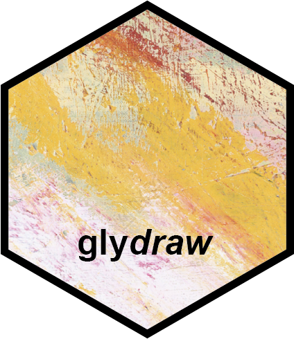

Save fixed-size glycan cartoon image to local device.
save_cartoon.RdThis function saves the glycan cartoon to a file, with a suitable size.
Arguments
- cartoon
A ggplot2 object returned by
draw_cartoon().- file
File name of glycan cartoon.
- ...
Ignored.
- dpi
Deprecated and ignored. Use
scaleto change the output size.- scale
Numeric output-size multiplier. The default
1saves the cartoon at its natural fixed size;2saves the same cartoon with twice the pixel width and height.
Why not width and height?
The familiar ggplot2::ggsave() interface uses width, height, and dpi
because ordinary ggplot2 plots are drawn into a user-chosen device size.
glydraw cartoons are different: the natural width and height are calculated
from the glycan structure so residues, linkages, labels, and borders stay
comparable across different glycans. If users supplied arbitrary width and
height, glydraw would either distort that structure-derived layout or need
to guess how to reconcile one requested size with the other.
dpi is also not the right control here because changing it alters how
point- and inch-based ggplot2 elements are rasterized relative to the fixed
cartoon canvas. glydraw therefore keeps an internal fixed design scale and
uses scale as a single multiplier for the final pixel dimensions. This
preserves the cartoon's aspect ratio and relative appearance while still
allowing larger or smaller output files.
Examples
if (FALSE) { # \dontrun{
cartoon <- draw_cartoon("Gal(b1-3)GalNAc(a1-")
save_cartoon(cartoon, "p1.png", scale = 2)
} # }